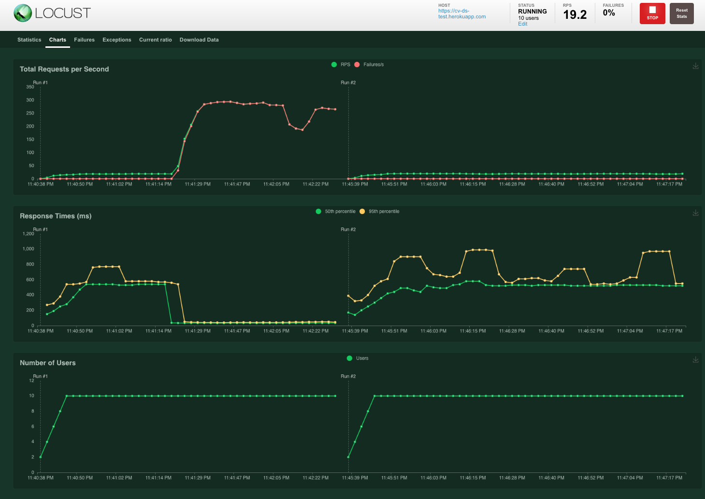

class(1)[1] "numeric"class(c(1, 2))[1] "numeric"And why I probably won’t be doing it again
Matt Kaye
June 29, 2023
A couple weeks ago, I wrote a high-level post on REST APIs. One thing that I noted was that I couldn’t, in good faith, recommend running R (or Plumber, a common library used to create APIs in R) in any type of high-load production system.
Admittedly, this was a pretty inflammatory thing to say. I know there’s a whole community of R developers working on R in production, as well as lots of believers in R for production services. I know this, in part, because I’ve been one of them in the past. But more on that in a bit.
In that aside in my last post, I commented that the reasons why I won’t be running R in production anymore were out of scope. This post is intended to explain those reasons in much more technical detail, to the extent that I’m capable.
First thing’s first: I love R. I’ve been a bit of an R evangelist for the past five years or so, and I think that R provides fantastic tooling that helps me do my day to day work dramatically (think maybe 3-4x) faster than equivalent tooling in Python, SQL, etc. I think I could argue strongly that the Tidyverse suite of tools has had a larger impact on how I write analytical code and how I think about data wrangling problems – in addition to just how I program in general – than any other single technical thing I’ve ever come across. In particular, purrr introduced me to functional programming and using functional patterns in the analytical code I write, and I haven’t looked back since.
I say this because I don’t want the rest of this post to seem as if it’s coming from someone parroting the same Python lines about how “it’s a general purpose programming language” and how “R is made for statisticians so it’s not meant for production” or any of the other usual arguments against R. My view is that most of these arguments are just people being dogmatic, and that most of those common criticisms of R are being leveled by people who have never actually worked in R.
I’ve argued with my fair share of people on the internet about R in production, and am aware of the usual pro-R arguments. I know about the Put R In Prod talks, and have used Plumber and RestRserve. I’m familiar with vetiver and the suite of MLOps tools that the Tidymodels team has been working on building out. In the past, I’ve referenced things like Put R in Prod as evidence that you can, in fact, run R in production. But I always felt a bit queasy about it: How was it, I’d ask myself, that I could really only find one reference of a company genuinely running R in production, when virtually every place that does machine learning that I’m aware of has experience with Python, Rust, Scala, or similar? This post is a long-form answer to that question.
Before I get into the guts of this post, I want to re-emphasize part of the tagline. When I say “production” in this post, I mean high-load production systems. I’m not talking about Shiny apps. I’m not talking about APIs getting one request every few seconds. I’m not talking about “offline” services where response times don’t particularly matter. I’ve had lots of success using R in all of those settings, and I think R is a great tool for solving problems in those spaces.
This post is about high-load, online systems. You might think of this, roughly, as a system that’s getting, say, more than one request per second on average, at least five requests per second at peak times, and there’s a requirement that the service responds in something like 500 milliseconds (p95) with a p50 of maybe 100. For the rest of this post, that is the kind of system I’m describing when I say “production.”
We’ve run into a number of problems with R in production. In broad strokes, the issues we’ve had have come from both Plumber, the API library we were using, and R itself. The next few sections cover some of the issues that caused the most headaches for us, and ultimately led us to switch over to FastAPI.
First and foremost: R is single-threaded. This is one of the most common criticisms I hear about R running in production settings, especially in the Python vs. R for production discussions I’ve been in. Of course, those discussions tend to ignore that Python also runs single-threaded, but I digress.
This post will be a bit more technical than some of my others. Since it’s already going to be long, I won’t be doing as much explaining the meanings of terms like “single-threaded” or similar.
R running single-threaded and not managing concurrency particularly well isn’t a problem in and of itself. Other languages (Python, Ruby, etc.) that are very often used in production systems of all sizes have the same issue. The problem with R in particular is that unlike Python, which has Gunicorn, Uvicorn, and other web server implementations, and Ruby, which has Puma and similar, R has no widely-used web server to help it run concurrently. In practice, this means that if you, for instance, were to run a FastAPI service in production, you’d generally have a “leader” that delegates “work” (processing requests) to workers. Gunicorn or Uvicorn would handle this for you. This would mean that your service can handle as many concurrent requests as you have workers without being blocked.
As I mentioned, R has no equivalent web server implementation, which, in combination with running single-threaded, means that a Plumber service really can only handle one request at a time before getting blocked. In my view, this makes running high-load production services in R a non-starter, as concurrency and throughput are the ultimate source of lots of scalability problems in APIs. Yes, Plumber does indeed integrate with future and promises to allow for some async behavior, but my view is that it’s hard to make an argument that async Plumber is a viable substitute for a genuinely concurrent web server.
But let’s put aside the “non-starter” bit for a second, and let’s imagine that you, like me, want to try everything in your power to get R working in production. The following sections will cover other issues we’ve run into, and a number of workarounds we attempted, to varying degrees of success.
In my opinion, one of the biggest issues with R is the type system. R is dynamically typed, and primitive types are generally represented as length-one vectors. That’s why these two variables are of the same type:
This is a big problem. What happens when we try to serialize the number 1 to JSON?
It returns [1] – as in: A length-one list, where the one element is the number one. Of course, you can set auto_unbox = TRUE, but that has other issues:
This is fine, but the problem with auto_unbox = TRUE is that if you have a return type that is genuinely a list, it could sometimes return a list, and sometimes return a single number, depending on the length of the thing being returned:
get_my_fake_endpoint <- function(x) {
jsonlite::toJSON(x + 1, auto_unbox = TRUE)
}
get_my_fake_endpoint(1)2 [2,3] In these two examples, I’ve gotten two different response types depending on the length of the input: One was a list, the other was an integer. This means that, without explicit handling of this edge case, your client has no guarantee of the type of the response it’s going to get from the server, which will inevitably be a source of errors on the client side.
In every other programming language that I’m aware of being used in production environments, this is not the case. For instance:
import json
import sys
x = 1
y = [1, 2]
print(type(x))
print(type(y))
json.dump(x, sys.stdout)
json.dump(y, sys.stdout)<class 'int'>
<class 'list'>
1[1, 2]In Python, the number 1 is an integer type. The list [1, 2] is a list type. And the JSON library reflects that. No need for unboxing.
But there’s more! R (and Plumber) also do not enforce types of parameters to your API, as opposed to FastAPI, for instance, which does via the use of pydantic. That means that if you have a Plumber route that takes an integer parameter n and someone calls your route with ?n=foobar, you won’t know about that until the rest of your code runs, at which point you might get an error about n being non-numeric.
Here’s an example:
Obviously, n is indented to be a number. You can even define it as such in an annotation like this:
But R won’t enforce that type declaration at runtime, which means you need to explicitly handle all of the possible cases where someone provides a value for n that is not of type int. For instance, if you call that service and provide n=foobar, you’d see the following in your logs (and the client would get back an unhelpful HTTP 500 error):
If you do the equivalent in FastAPI, you’d have vastly different results:
from fastapi import FastAPI
app = FastAPI()
@app.get("/types")
async def types(n: int) -> int:
return n * 2Running that API and making the following call returns a very nice error:
curl "http://127.0.0.1:8000/types?n=foobar" | jq
{
"detail": [
{
"loc": [
"query",
"n"
],
"msg": "value is not a valid integer",
"type": "type_error.integer"
}
]
}I didn’t need to do any type checking. All I did was supply a type annotation, just like I could in Plumber, and FastAPI, via pydantic, did all the lifting for me. I provided foobar, which is not a valid integer, and I get a helpful error back saying that the value I provided for n is not a valid integer. FastAPI also returns an HTTP 422 error (the error code is configurable), which tells the client that they did something wrong, as opposed to the 500 that Plumber returns, indicating that something went wrong on the server side.
Another issue with Plumber is that it doesn’t integrate nicely with any testing framework, at least that I’m aware of. In FastAPI, and every other web framework that I’m familiar with, there’s a built-in notion of a test client, which lets you “call” your endpoints as if you were an external client. In Plumber, we’ve needed to hack similar behavior together using testthat by spinning up the API in a background process, and then running a test suite against the local instance of the API we spun up, and then spinning down. This has worked fine, but it’s clunky and much harder to maintain than a genuine, out-of-the-box way to do testing that really should ship with the web framework. I’ve heard of callthat, but I’ve never actually tried it for solving this problem.
When I’ve defended R in that past, I’ve also heard a common complaint about it’s speed. There are very often arguments that R is slow, full-stop. And that’s not true, or at least mostly not true. Especially relative to Python, you can write basically equally performant code in R as you can in numpy or similar. But some things in R are slow. For instance, let’s serialize some JSON:
library(jsonlite)
iris <- read.csv("fastapi-example/iris.csv")
result <- microbenchmark::microbenchmark(
tojson = {toJSON(iris)},
unit = "ms",
times = 1000
)
paste("Mean runtime:", round(summary(result)$mean, 4), "milliseconds")[1] "Mean runtime: 0.9809 milliseconds"Now, let’s try the same in Python:
from timeit import timeit
import pandas as pd
iris = pd.read_csv("fastapi-example/iris.csv")
N = 1000
print(
"Mean runtime:",
round(1000 * timeit('iris.to_json(orient = "records")', globals = locals(), number = N) / N, 4),
"milliseconds"
)Mean runtime: 0.1773 millisecondsIn this particular case, Python’s JSON serialization runs 6-7x faster than R’s. And if you’re thinking “that’s only one millisecond, though!” you’d be right. But the general principle is important even if the magnitude of the issue in this particular case is not.
JSON serialization is the kind of thing that you’re going to need to do if you’re building an API, and you generally want it to be as fast as possible to limit overhead. It also takes longer and longer as the JSON itself is more complicated. So while in this particular case we’re talking about microseconds of difference, the underlying issue is clear: Plumber uses jsonlite to serialize JSON under the hood, and jsonlite is nowhere near as fast as roughly equivalent Python JSON serialization for identical data and the same result.
The takeaway here is that while it may be true that vectorized R code to create a feature for a model or low-level BLAS or LAPACK code that R calls to perform matrix multiplication should be equally performant to the equivalent Python, R can sometimes have overhead, like in JSON serialization, that becomes apparent as the size and complexity of both the body of the request as well as the response body scale up. There are certainly other examples of the same overhead. When we moved a Plumber service to FastAPI with no changes to the logic itself, we got about a 5x speedup in how long it took to process requests. And just to reiterate: That 5x speedup had nothing to do with changes to logic, models, or anything tangible about the code. All of that was exactly the same.
Another issue with R for production is that very often in production services, we want to do some things on the following (in no particular order and not exhaustive) list:
There are tools for doing all of these things. The first would be a feature flagging tool like LaunchDarkly. The second would be an error monitoring tool like Sentry. And the last would be a feature store like Feast which might use something like Redis under the hood.
Python supports all of these tools. All of them have APIs in Python, and are easily integrated into a FastAPI, Flask, or Django service. R has no bindings for any of them, meaning that if you wanted to run R in a system where you use feature flags, for instance, you’d need to roll your own flagging logic or find a more obscure tool that supports R. That’s fine for some teams, but writing feature flagging logic isn’t generally a good use of a data scientist’s time. And especially not when there are a whole variety of great tools that you can grab off the shelf and slot into a Python service seamlessly.
This issue expands beyond just production tooling, too. For instance, there are a number of MLOps tools for all parts of the machine learning process, such as Weights & Biases for experiment tracking and model versioning, Evidently for monitoring, Bento for model serving, and so on, that all only have Python bindings. That’s not to say that there are no tools that support R – some, like MLFlow certainly do – but the set of tools that support R is a strict, and small, subset of the ones that support Python. I’m also aware of the great work that the Tidymodels team is doing on Vetiver, Pins, and related packages in the Tidymodels MLOps suite, but the reality is that these tools are far behind the state of the art (but are catching up!).
Our team tried out a bunch of ideas to get around these issues before ultimately abandoning R in favor of FastAPI.
We “solved” the types issues R has by having lots of type validation at request time, and making use of JSON schema validation to the extent that we could to limit the number of edge cases we ran into. We use MLFlow for model tracking, and don’t really need some of the more “sophisticated” MLOps tools mentioned before. But the first issue – and the biggest – was the concurrency issue, which we ultimately failed to overcome.
The first “fix” for R’s concurrency issue we tried was the most expensive one: Buying our way out of the problem. We horizontally scaled our R service up from a a single instance to having multiple instances of the service behind a load balancer, which bought us a significant amount of runway. It’s expensive, but this could be a reasonably good solution to R’s concurrency issues for most teams. However, there’s only so far that you can scale horizontally before needing to address the underlying issues. For instance, if you have a model that takes 250ms to run predictions through and return to the client, on average you can process four requests per second per instance of your API. But since R is running single-threaded, you probably can really only run about one or two requests per second before you start to get concerned about requests backing up. If one request takes one second, now you could have four more requests in the queue waiting to be processed, and so on.
Horizontal scaling fixes this issue to some extent, but the magnitude of the problem scales linearly as the amount of throughput to the service increases. So ultimately, it’s inevitable that you’ll need to either address the underlying problem of the performance of the service, or spend potentially exorbitant amounts of money to buy your way out of the problem.
We also tried to get around R’s lack of an ASGI server like Uvicorn by sitting our Plumber API behind an NGINX load balancer. The technical nuts and bolts were a little involved, so I’ll just summarize the highlights here. We used a very simple NGINX conf template:
## nginx.conf
events {}
http {
upstream api {
## IMPORTANT: Keep ports + workers here
## in sync with ports + workers declared
## in scripts/run.sh
server localhost:8000;
server localhost:8001;
server localhost:8002;
server localhost:8003;
}
server {
listen $PORT;
server_name localhost;
location / {
proxy_pass http://api;
}
}
}Then, we’d boot the API as follows:
## run.sh
# !/bin/bash
## IMPORTANT: Keep ports + workers here
## in sync with ports + workers declared
## in nginx.conf
Rscript -e "plumber::options_plumber(port = 8000); source('app.R')"&
Rscript -e "plumber::options_plumber(port = 8001); source('app.R')"&
Rscript -e "plumber::options_plumber(port = 8002); source('app.R')"&
Rscript -e "plumber::options_plumber(port = 8003); source('app.R')"&
sed -i -e 's/$PORT/'"$PORT"'/g' /etc/nginx/nginx.conf && nginx -g 'daemon off;'The basic premise was that we’d boot four instances of our Plumber API as background processes, and then let NGINX load balance between them.
This worked well in theory (and also in practice, to an extent) until we ran into an odd problem: At certain levels of load, the “workers” started to die and not reboot, which resulted in cascading failures. Essentially, one worker would go down, resulting in more load on the other workers, until a second worker went down, causing the service to spiral and eventually crash. You can see this happening in the load test below.

At relatively low levels of traffic (~25 RPS) the service starts to have issues. Those issues snowball, until eventually every request begins failing. Note that 25 requests per second sounds like a lot, but that load is distributed across four workers, meaning each worker is attempting to handle 5-6 requests per second.
For some services, burning down under this amount of load is fine. But it was disconcerting for us, especially since the amount of actual work that the endpoint we were hitting in our load test was doing was just extracting a pre-computed item from a list. The vast majority of the overhead in these API calls was JSON serialization, type checking, and network latency, but the R service itself was only taking about 10ms to process the request (read: extract the necessary element) once the endpoint got the request.
The problem for us was that if the service is burning down in this case where we’re doing virtually no lifting at all after getting 25 or so requests per second, what happens when the processing time for a request jumps up from 10ms to 250ms for creating features, making predictions, and so on? In that world, I’d expect that even behind NGINX, our service could probably only safely process about 5 requests per second before it starts getting dicey and us needing to start thinking again about horizontally scaling to more instances, and that wasn’t nearly enough headroom to be comfortable with in a production system.
I want to wrap up by tying everything here back to what I discussed at the start. I’m very much not an R hater: Quite the opposite. I think R is an amazing language that’s made it so much easier and more enjoyable to do my job day-to-day, and I hoped against hope that we could figure out a way to run R in production. I thought most of the normal complaints I’d heard about R “just not being production-grade” weren’t rigorous enough, and that made me want to give it a shot to prove the haters wrong, in some sense.
It turned out, unfortunately, that I was the one that was wrong. As we scaled up our R in production rig, it became increasingly apparent that there were some very real problems with R that we really couldn’t get around without either putting lots of work and duct tape into fixing them, or throwing money at them. And Python – FastAPI in particular – was so much simpler, more reliable, and gave me dramatically more confidence than I had in Plumber.
Once upon a time, I’d hoped that this post would’ve been something of a love letter to R: A story of triumph, where we figured out how to tweak and tune and architect just right, and got a stable, fast R service running in production to prove all of the doubters and dogmatic Pythoners wrong. But unfortunately, it didn’t turn out that way. So my hope in writing this post was to expose some more of the nuts and bolts for why I won’t be trying to run R in production again, or at least not in the short term. I don’t believe in sweeping statements like “R isn’t built for production” since I don’t actually know what they mean, and they’re not helpful for getting to the root of the problem with R. But as I discovered, “R doesn’t have an equivalent of Gunicorn or Puma” is a very legitimate flaw with R that makes it very difficult – not impossible, but very difficult – to run R in production.
But there’s a larger point here, that maybe is an undertone of this whole post, and to some degree all of the conversation about R vs. Python for production. The reality is that lots of software teams are running Python in production, which means that Python and its community are focused on building tooling in Python to service that use case. To my knowledge, there aren’t many teams running R in production, and so the focus and will doesn’t seem to be there in the same way it is for Python. And maybe that’s what matters most at the end of the day: Python is a safer choice since more people are using it, which means it continues to be worked on more, which makes it faster, and safer, and so on. And the cycle continues.
I hope that R can have that same focus on production, some day.
There have been a few points that have come up in discussion as this post has circulated through some communities online, so I’d like to add some thoughts to address some of those. I very much appreciate all of the attention this post has gotten!
This post is about R in production, but it’s also about Plumber. I recognize that I conflate Plumber and R throughout this post, and that many of the points here are comparing, for example, Plumber and FastAPI. That wasn’t exactly my intention. Especially when it comes to web servers, there are two points I’d like to emphasize.
First, the reason I seem to be conflating Plumber (a library) and R (a language) is that Plumber is the only viable, widely used API framework in R. So, to some extent, that means that problems with Plumber are problems with R, since there really aren’t viable alternatives, at least to my knowledge.
Second, FastAPI is only one alternative, but the point I was trying to make was broader: Every web framework that I’m aware of utilizes some kind of concurrent web server, a la Uvicorn, Gunicorn, or Puma. So while these points about the lack of a battle-hardened, concurrent web server implementation in Plumber apply when comparing it to FastAPI, they also apply when comparing it to Flask or Django, which you’d run behind Gunicorn or similar, Rails, which you’d run behind Puma or similar, Rocket (in Rust), which ships with its own multi-threaded, asynchronous server, and so on. At its core, this really isn’t a comparison of Plumber and FastAPI: It’s a comparison of Plumber and every other web framework that I am aware of.
I made a comment about a 5x improvement in throughput by switching to FastAPI:
we got about a 5x speedup in how long it took to process requests
I should have added a clarifying point: This 5x improvement was achieved even after accounting for scaling down from four instances of a Plumber service to a single instance of a FastAPI service with four workers. So it wasn’t the case that the throughput improvement was due to concurrency, as the number of “workers” in some sense remained the same.
Valve is an admittedly very interesting package that attempts to handle some of the concurrency issues that this post has discussed. And in an effort to be transparent: I’ve done virtually no research on Valve, and have no experience working with it. But immediately, there’s a major issue: If you’re running code in a production system (as defined here), there are some philosophical requirements that I strongly believe need to be met about the level of comfort I have when considering adopting new libraries. Code in production needs to be stable. Code in production needs to be debuggable and maintainable. Code in production, ideally, should be treated as inherently risky and costly.
At work, we often like to talk about a concept called an innovation token, and about choosing boring technology. The basic principle is this: Your team only gets a few innovation tokens to spend on things that are lesser-known, lesser-used, more complicated to set up or maintain, and so on, and you must spend them wisely. For instance, if your team is passionate about typed functional programming like ours is, you might write your front end in PureScript, like we have.
But writing our front end in PureScript costs us an innovation token. PureScript isn’t commonly used, and so it’s harder, for instance, to StackOverflow your way out of issues you’re running into, because there are fewer people who will have had the same issues as you in the past. You might think of this issue as there being less “common knowledge” about PureScript, or less prior art that you and your team can rely on. So by all means, use PureScript, but just know that this is costing you one of those tokens, and treat the decision as a costly one.
Using a tool like Valve, similarly, costs an innovation token, and it’s not one that I’d be willing to spend. If virtually nobody is using Valve in production, it’s not on CRAN, and the documentation is sparse, it’ll be an order of magnitude harder to follow best practices (if they even exist) and fix issues that will inevitably come up in using it. In my view, this is a non-starter. To some degree, a theme of this whole post has been that using R itself in production costs an innovation token, and spending another one on Valve when you could just as easily use Flask, FastAPI, or some similar framework is a choice that I, personally, would not feel comfortable making. That’s not to say that Valve wouldn’t work or do what’s advertised on the tin, or anything like that. It’s just that when something inevitably goes wrong, I feel much more comfortable in my ability to find the solution to the problem when it’s a Flask problem or a FastAPI problem as opposed to if it’s a Valve problem.
Ultimately, as data scientists, we get paid to deliver business value. We don’t get paid to work out weird kinks in an uncommonly used library, or any other version of fitting square pegs into round holes. And so my view is that in cases like this, the boring technology – read: the one that everyone else uses – tends to be the one that ultimately lets us do what we get paid to do. This is the crux of the sadness I felt in moving from R to FastAPI: I was making a conscious choice to give up something that I love in the name of pragmatism, which is never an easy call to make.
stopifnotOne proposed fix for the “R doesn’t do a good job of handling types” issues that I outlined above is to use something like this to check types:
#* Double a number
#*
#* @param n:int The number to double
#*
#* @get /double
function(n) {
stopifnot(is.integer(n))
n * 2
}This attempts to stop processing the request if the API receives a value for n that is not an integer. Unfortunately, it doesn’t work. And ironically, the reason why it doesn’t work is because of Plumber not enforcing types. If you run this API and make a request to /double with n=foobar, you’ll get the following response:
curl "http://127.0.0.1:7012/double?n=foobar" | jq
{
"error": "500 - Internal server error",
"message": "Error in (function (n) : is.integer(n) is not TRUE\n"
}But if you make the request with n=2, which you would expect to return 4, you’ll get the same error:
curl "http://127.0.0.1:7012/double?n=2" | jq
{
"error": "500 - Internal server error",
"message": "Error in (function (n) : is.integer(n) is not TRUE\n"
}There are three major problems here.
The first is that query parameters in Plumber are treated as strings and need to be coerced to other types, since Plumber doesn’t enforce the types as defined. This means that is.integer(n) will always return FALSE, no matter what value is provided. To get this to work, you’d need to do something like this: is.integer(as.integer(n)). But this also doesn’t work, since is.integer(as.integer("foo")) returns TRUE. So this means that what we actually need to do is add yet another type check. Something like this would work, but look how cumbersome it is:
#* Double a number
#*
#* @param n:int The number to double
#*
#* @get /double
function(n) {
n <- as.integer(n)
stopifnot(is.integer(n) && !is.na(n))
n * 2
}Let’s run this code for a few examples:
n1 <- "2"
n2 <- "foo"
n3 <- "2,3"
double <- function(n) {
n <- as.integer(n)
stopifnot(is.integer(n) && !is.na(n))
n * 2
}
double(n1)[1] 4Warning in double(n2): NAs introduced by coercionError in double(n2): is.integer(n) && !is.na(n) is not TRUEWarning in double(n3): NAs introduced by coercionError in double(n3): is.integer(n) && !is.na(n) is not TRUEGreat! That works. It’s just ugly since we now need to handle both the integer case and the NA case, but it’s not the end of the world.
The second problem with the original stopifnot approach is that the API returns an HTTP 500 error – which generally means that something went wrong on the server side, unrelated to the client’s request – instead of an HTTP 400, which should be used for indicating bad parameter values. There’s lots of documentation on what HTTP status codes to return to the client for different request outcomes. Here’s one from Mozilla. In this case, the 500 indicates that the server did something wrong, and, aside from reading the error message, the client has no way of knowing what happened.
To fix this, we’d need to add a custom implementation of some logic that’s similar to stopifnot, but not exactly the same. The key is that stopifnot aborts the request, forcing an HTTP 500. If we want to return 4XX instead, we need to short-circuit the processing that happens in the endpoint.
Something to note is that if you’re working in a production service, error handling is something you need to have anyways. So I wouldn’t consider this to be too much overhead, but the amount of additional overhead is compounded by Plumber’s lack of proper tooling for these types of problems out of the box.
Something like this might work as a quick fix:
error_400 <- function(res, msg) {
code <- 400L
res$status <- code
res$body <- list(
status_code = code,
message = msg
)
}
#* Double a number
#*
#* @param n:int The number to double
#* @serializer unboxedJSON
#*
#* @get /double
function(req, res, n) {
n <- as.integer(n)
if (!is.integer(n) || is.na(n)) {
error_400(res, "N must be an integer.")
} else {
return(n * 2)
}
}In practice, you’d want something much more robust than this. Some helpful examples for structuring Plumber errors are laid out in this post. But if we run the API now, let’s see how our error looks.
curl "http://127.0.0.1:7012/double?n=foobar" | jq
{
"status_code": 400,
"message": "N must be an integer."
}Much better.
And that brings me to the last issue: The error message the client gets back from the API is an R error, which is a problem. We don’t want to return stack traces or errors that expose too much of the guts of the API to the client, as those could be used by a malicious actor to perform an attack. But secondly, and maybe more importantly: Not everyone speaks R, and so returning an R error is not helpful. The point of an API is to abstract away the R, Python, or any other implementation details from the client, and returning R errors does not achieve that goal.
Instead, we want two things. First, we want to return an HTTP 4XX to the client to indicate that they did something wrong. And second, we want the error message they get back to indicate what they did wrong. Note that I achieved that in the changes I made above. Now, if the client supplies n=foobar, they get back an error message with a 400 status code and a message telling them that N must be an integer, so they know what they did wrong and how to fix it.
Suspiciously, after all of this additional implementation to handle types and provide helpful errors, the Plumber service returns errors that look similar to what FastAPI gives out of the box, which is largely the point I’m trying to make in this post. While yes, it is certainly possible to handle all of these issues in Plumber and program around them, other frameworks give you them for free, and I generally don’t want to spend my time working out kinks in R’s already shoddy type system and in Plumber itself, when I could get the same from some type hints in the corresponding FastAPI code, and then get back to providing real value. That’s just my preference.